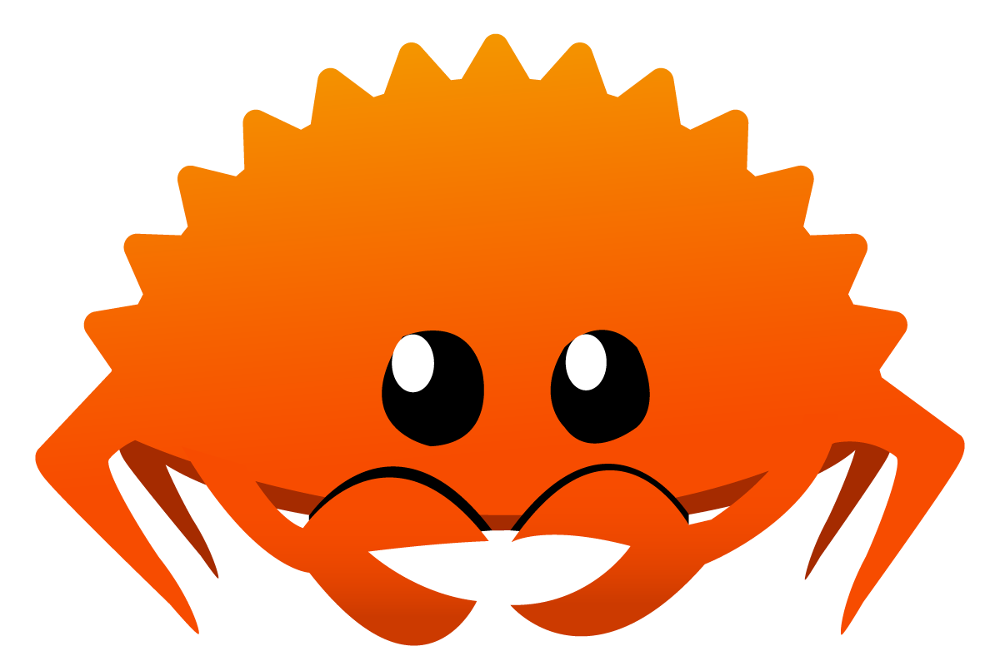
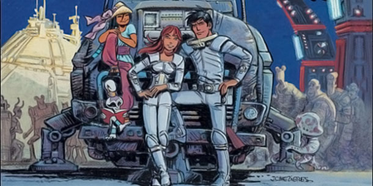

class: center, middle background-image: url(images/background-meetup-ovh.png) <img src="images/logo-ovh-meetup.png" alt="logo-ovh-meetup" height="150" /> # Rust in Lille  ####4 april 2017 --- # Rust historical, notable inspirations <img src="images/rust-logo-512x512.png" alt="logo" height="200"/> - C++ - Cyclone - Ocaml - Haskell - Erlang [Influences](https://doc.rust-lang.org/reference.html#appendix-influences) [Papers](https://forge.rust-lang.org/bibliography.html) --- # Rust cool features Because he has several advantages. * Security of inputs (via types, no NULL) * Modern programming syntax (traits, generics, Meta-programming, pattern matching) * Multi-plateform, close to OS * Cargo * Smooth integration with other langages via [FFI](http://jakegoulding.com/rust-ffi-omnibus/) (C, Perl ...) * Low memory footprints (Borrow Checker) and Zero cost abstraction --- # Garbage collectors are nice tools. 1. You delegate your memory handling to another sub program. 2. but this sub-program, has to scale as fast as your program. 3. And sometimes it is not, and this program then become a bottleneck, --- # See I don't say, it doesn't work, but if you don't take the problem from roots. For some use case, it is just a terrible ~~nightmare~~ idea. --- # Rust introduce, a way to do it by yourself. the garbage collection work without significante productivity overhead through a system called Borrow checker --- # Going deeper ## Understanding Ownership and Borrowing - No GC needed. - Compiler helps you to not do ~~stupid~~ unsafe things. - Saving your time --- # Ownership system Let me introduce you some peoples * Rhondup, is a IA spaceship, protector * Valerien, is a space and time agent * LaureLine, is a juggler  * Blender, is an aholic robot <img src="images/Bender_Rodriguez.png" alt="blender" height="150"/> --- # Ownership : case 1 ```rust Cocktail::new(); ``` Rhonda make a new Cocktail --- # Ownership : case 1 ```rust let valerian = Cocktail::new(); ``` Rhonda give ownership of this cocktail to Valerian Valerian now owns his cocktail --- # Ownership : case 1 move semantics ```rust let valerian_cocktail = Cocktail::new(); let laureline_cocktail = valerian_cocktail; let bender_cocktail = valerian_cocktail; ``` * Valerian give ownership of a cocktail to Laureline * Valerian give ownership of a cocktail to Bender * but Valerian already gave cocktail --- # Ownership : case 1 move semantics ```rust let valerian_cocktail = Cocktail::new(); let laureline_cocktail = valerian_cocktail; let bender_cocktail = valerian_cocktail; ``` * Valerian give ownership of a cocktail to Laureline * Valerian give ownership of a cocktail to Bender * but Valerian already gave cocktail <span class="wrong">WRONG</span> --- # Ownership : case 1 ```rust let valerian_cocktail = Cocktail::new(); let laureline_cocktail = valerian_cocktail; let bender_cocktail = laureline_cocktail; ``` * Valerian give ownership of a cocktail to Laureline * Laureline give ownership of a cocktail to Bender --- # Ownership : case 1 ```rust let valerian_cocktail = Cocktail::new(); let laureline_cocktail = valerian_cocktail; let bender_cocktail = laureline_cocktail; ``` * Valerian give ownership of a cocktail to Laureline * Laureline give ownership of a cocktail to Bender <span class="good">GOOD</span> --- # Ownership : case 1 ```rust let valerian_cocktail = Cocktail::new(); let laureline_cocktail = valerian_cocktail; let bender_cocktail = valerian_cocktail.clone(); ``` * Valerian give ownership of his cocktail to Laureline * Valerian try to clone his cocktail to give it to Bender --- # Ownership : case 1 ```rust let valerian_cocktail = Cocktail::new(); let laureline_cocktail = valerian_cocktail; let bender_cocktail = valerian_cocktail.clone(); ``` * Valerian give ownership of his cocktail to Laureline * Valerian ask to Rhonda to clone his cocktail but already give it to someone else :( <span class="wrong">WRONG</span> --- # Ownership : case 1 ```rust let valerian_cocktail = Cocktail::new(); let laureline_cocktail = valerian_cocktail.clone(); let blender_cocktail = valerian_cocktail; ``` * Valerian give ownership of a cocktail clone to Laureline * Valerian give ownership of his cocktail to Blender <span class="good">GOOD</span> --- # Ownership : case 1 same as clone later ```rust let valerian_cocktail = Cocktail::new(); let laureline_cocktail = valerian_cocktail; drink!("{}", valerian_cocktail); ``` --- # Ownership : case 1 same as clone later ```rust let valerian_cocktail = Cocktail::new(); let laureline_cocktail = valerian_cocktail; drink!("{}", valerian_cocktail); ``` Error, Valerian doesn't own a cocktail anymore ! <span class="wrong">WRONG</span> --- # Ownership : case 2 nearly same ```rust let valerian_cocktail = Cocktail::new(); fruit_shaker(valerian_cocktail); drink!("{}", valerian_cocktail); ``` * valerian put the cocktail into shaker * Give ownership of cocktail to the shaker --- # Ownership : case 2 nearly same ```rust let valerian_cocktail = Cocktail::new(); fruit_shaker(valerian_cocktail); drink!("{}", valerian_cocktail); ``` * valerian put the cocktail into shaker * Give ownership of cocktail to the shaker <span class="wrong">WRONG</span> fruit_shaker take ownership of cocktail --- # Borrowing : case 1 ```rust let mut valerian_cocktail = vec_of_string!["tonic","gin"]; let laureline_cocktail = &valerian_cocktail; println!("{} {}", valerian_cocktail[0], laureline_cocktail[0]); laureline_cocktail.push("lemon"); ``` <span class="wrong">WRONG</span> try to modify immutable borrow --- # Borrowing : case 2 ```rust let mut valerian_cocktail = vec_of_string!["lemon","tonic","gin"]; drink(&mut valerian_cocktail); drink(&mut valerian_cocktail); println!("{:}", valerian_cocktail); ``` <span class="good">GOOD</span> --- # Lifetimes * static * 'a notation * lifetime of a child var, could not exceed existing one --- # Lifetimes ' : case 1 ```rust { let a; // -+ `a comes into scope // | let b; // -+-+ `b comes into scope // | | // | | // * * release } ``` --- # End of lifetime .. ```rust impl Drop for Cocktail { fn drop(&mut self) { println!("Give glass back!"); } } ``` --- # Design by lifetime Why lifetimes only for memory allocation ? --- # Design by lifetime Why lifetimes only for memory allocation ? * sockets --- # Design by lifetime Why lifetimes only for memory allocation ? * sockets * locks --- --- # Deeper Restrictions system [borrow checker](https://github.com/rust-lang/rust/blob/master/src/librustc_borrowck/borrowck/README.md) Loan = (Leftvalue, Lifetime, Mutability, Restriction*) Restriction = (Leftvalue, [Action]) Action = MUTATE | CLAIM | FREEZE [] (moves) * MUTATE (cannot be assign) * CLAIM (cannot be borrowed mutably) * FREEZE (cannot be borrowed immutably) &mut LeftValue => Restrictions(Leftvalue, Lifetime, MUTATE|CLAIM|FREEZE) &LeftValue => Restrictions(Leftvalue, Lifetime, MUTATE|CLAIM) --- # Yay Now you do not need GC ! Dandling socket, and do not care about socket close. No use after free problem. See ownership and borrowing is as simple as a free beer. --- # Other use cases * server & system programming * video games * trading engine --- # What next ? * starting tools --- # What next ? * starting tools * microservices in Rust --- # What next ? * starting tools * microservices in Rust * tokio --- # What next ? * starting with tools * microservices in Rust * tokio * more about langage feature --- background-image: url(images/background-meetup-ovh.png) .center[] Thank you Questions ? # Communities [Lille Elixir](https://lille-elixir.slack.com) [Lille FP](https://lille-rust.slack.com) [Lille Rust](https://lille-rust.syf.fr)